That means more recent pictures appear near the top.
Concept art for a fantasy story that may or may not ever get made.
 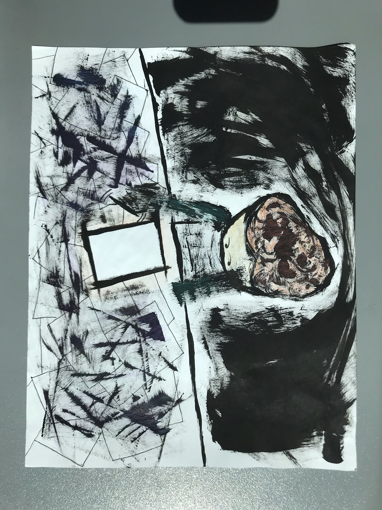
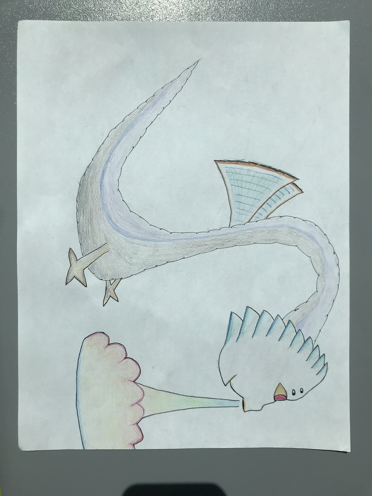
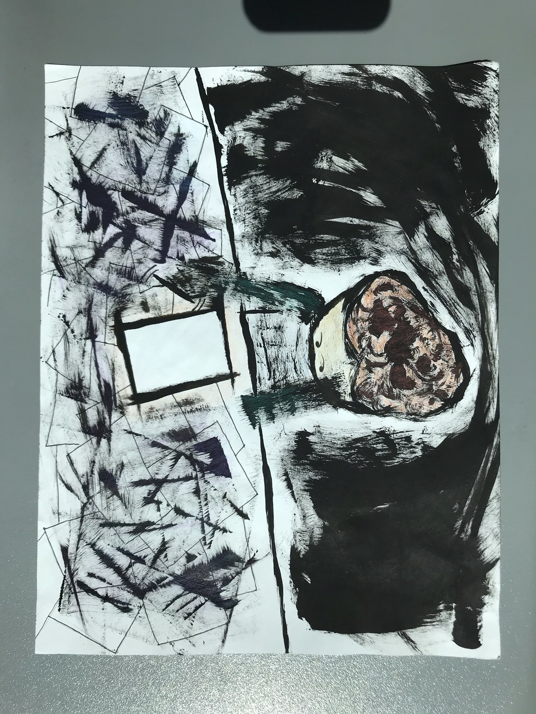
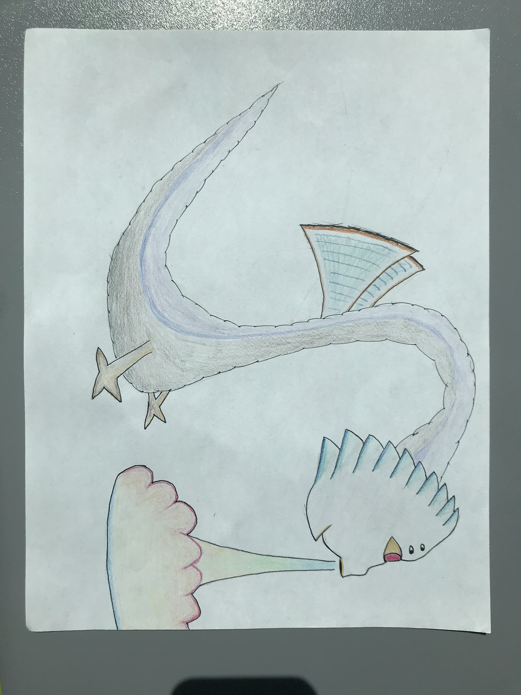
A self portrait of me as a spider
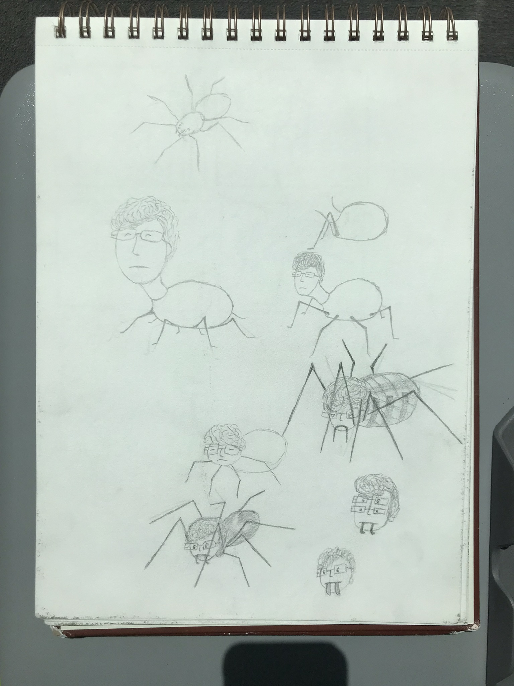 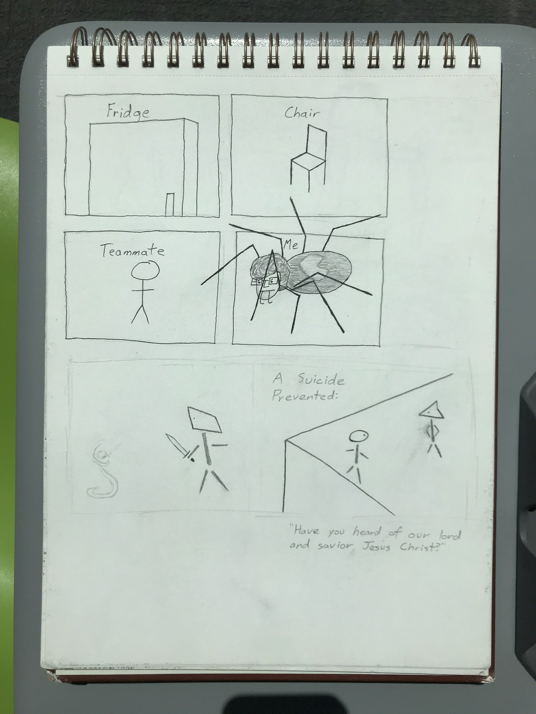 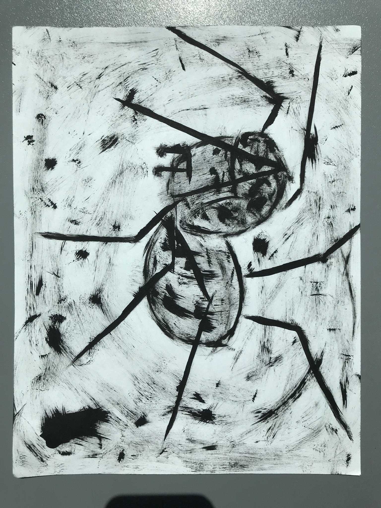
Concept art for The Wireframe God
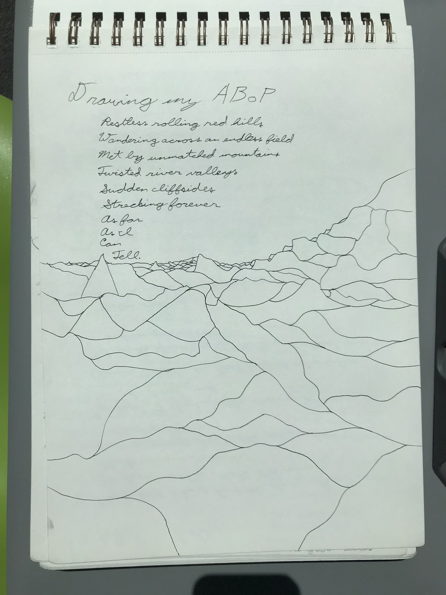 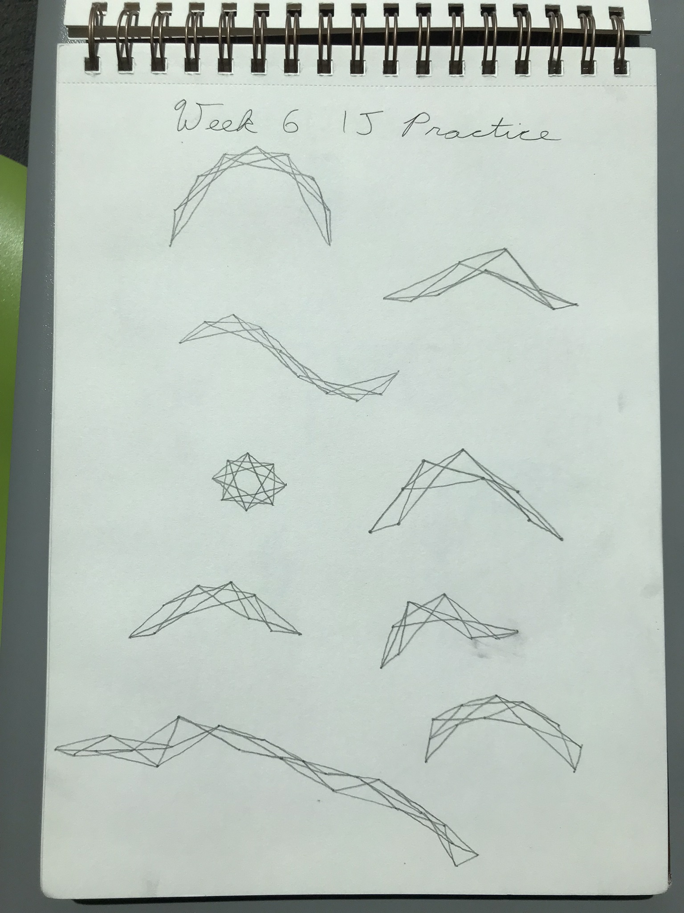 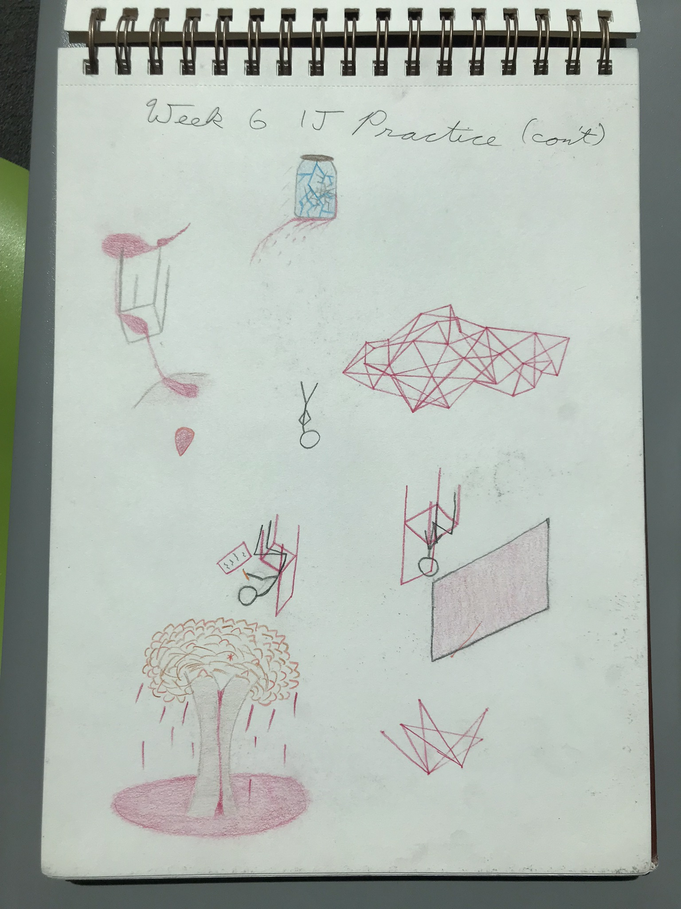
Concept art for an outer space platformer that never got made
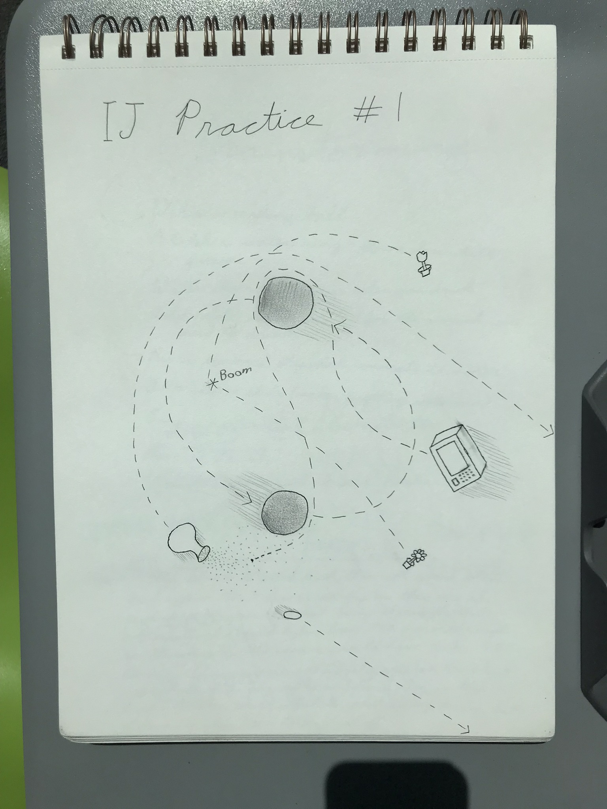 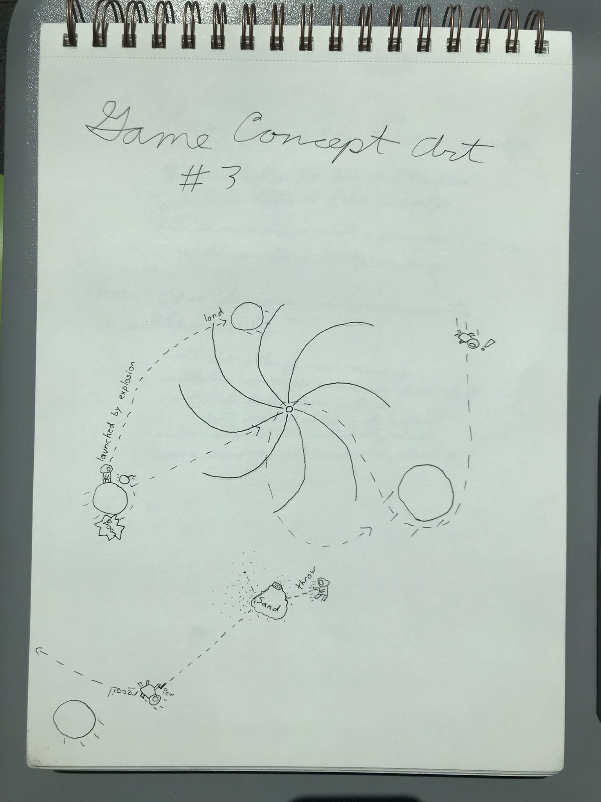 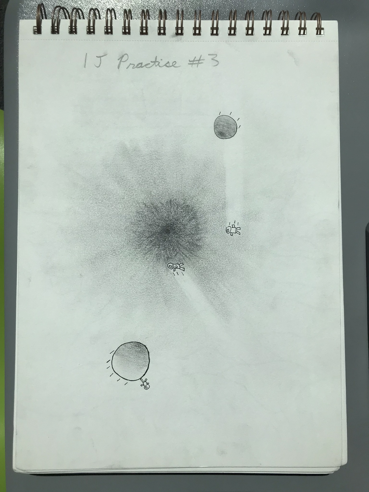